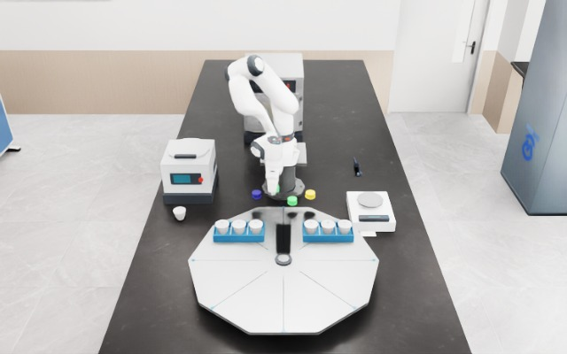
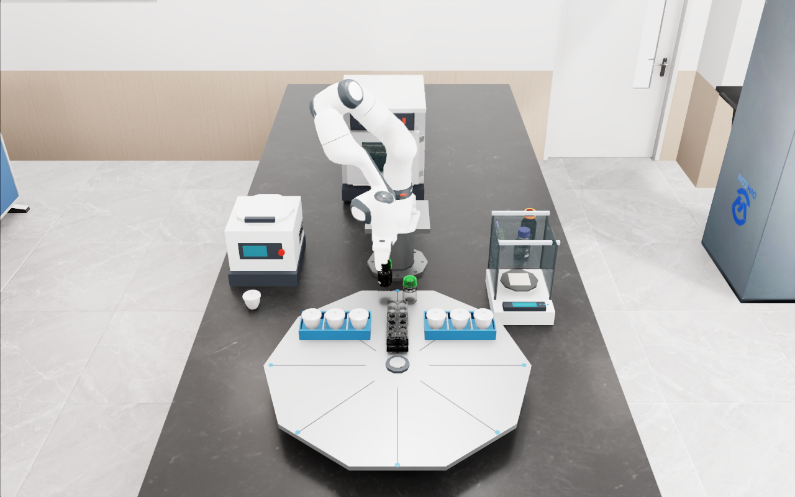

失败与重建消耗时间，原操作期限继续保留
先独立记录原抬瓶事件 A，在天平释放后保存前五阶段、完整场景、Astra 语义记忆和待执行期限。首次子尝试在分发前按预案中断；新进程恢复同一检查点时，保留 A 和“30 秒后接触”的原目标，扣除首次失败及全部重建、模型读出和等待时间。
| 事件 / 阶段 | 任务时刻 / 已计步数 | 验收含义 |
|---|
任务时钟是明确声明的仿真逻辑钟，进程间暂停；从物理恢复前开始扣除原生积分时间。A 的观测资源是声明的因果仿真仪器报告和短时视觉线索；接触尚未独立标定。第二张图是首次子尝试答复及中断前的真实恢复观测，不能当作中断后照片。本例没有实时时钟、连续化学演化、液体恢复或随机化记忆因果收益的结论。正式 M1 与训练准入仍为零。
V90 原事件期限、全部恢复步与父文件完整性复核第一个瓶体任务：抓取、放置、再抓取与放回
在已有 A 站场景中，两次完整执行均通过独立接触与放回核验。历史专家只提供关节驱动目标，物体运动由新物理积分产生；任务执行期间禁止写入物体位姿或机器人关节状态。

滑动查看 15 个实际 RGBD 采集时刻；这里展示 RGB 原图。每个进程使用独立的原生时钟。
- 接近瓶体
- 双侧接触抓取
- 抬升
- 搬运至天平
- 放置并释放
- 再次抓取
- 返回转盘
- 释放并退开
| 执行条件 | 放回误差 | 首次搬运双侧接触 | 相对位置漂移 | 夹爪闭合命令 → 实际接触 |
|---|
这两次执行属于同一场景与同一专家指令的工程对照，尚无随机化成功率。V79 封存八段证据并验证任务起点冷重建；下方 V80 进一步验证天平中途释放后的续跑。下方 V83–V86 补充记忆排程与连续积分对照；正式 M1 与化学事件计时仍待验收。170.8–175.0 ms 是采样接触延迟区间，不代表化学计时误差。
查看 V79 原始证据摘要与数据摘要校验值天平释放后保存，新进程只执行剩余阶段
| 任务段与目标 | 目标位置误差 | 双侧接触比例 | 夹持相对漂移 |
|---|
原搬运准入门槛为相对漂移 ≤20 mm、双侧接触 ≥80%；原检查点恢复门槛为 1 mm / 0.5° / 0.0001 rad，两者分别报告。接触与负分离指标限于登记的机器人 / 目标物体接触。
这里恢复了固定专家控制器的任务位置与原放回目标，尚未恢复 Astra 对话记忆。两段保留各自原生时钟；不能将它们当作连续化学时间轨迹。携物中途、液体、随机化 M1 和完整化学长链仍待验收。
V80 中途恢复与父阶段完整性验收摘要两种短时线索，冷恢复后执行不同接触时间
沿用原 A 站实验室。Astra 观察 0.5 秒橙色或绿色线索，写下语义记忆；父任务在天平释放后封存。新进程恢复完整场景和记忆，再由模型提出余程的开始时间，实际执行再抓取与放回。
两例使用暂停读出的确定性工程协议，没有随机化成功率。原恢复门槛 1 mm / 0.5° / 0.0001 rad 保留，30 个瞬态均测全部登记实体；任务期间没有物体位姿或关节状态写入。视觉线索为非碰撞装置，接触时延未独立标定；跨进程原生时钟不连续。正式 M1、化学 A→B 计时和液体恢复仍待验收。
独立物理验收与资源摘要已消耗的时间必须计入操作排程
这两轮都在 Astra 返回期间继续积分物理。V85 按实际已消耗时间缩短等待；V86 是显式登记的延迟基线，返回后仍等待完整间隔。独立复核分别检查物理任务完成和接触时间。
| 条件 | 调用原生 / 宿主时间 | 实际接触时间 | ±20 ms 计时 | 放回误差 |
|---|
两轮实测调用延迟不同，不能用它们估计严格配对成功率或总体收益。时间轴以新尝试恢复后的原生时钟为零；原生秒与宿主秒不等价，未验证实时运行。已有驱动技能与单一场景不代表学习策略或 task-space 泛化。失败原样保留，正式样本与训练准入仍为零。
独立计时复核摘要保留已完成阶段，只重试失败子阶段
在天平释放后保存完整场景和 Astra 记忆。首次子尝试注入 6 秒原生交付延迟，提案过期后拒绝执行；唯一一次重试从同一父检查点启动新进程，完成剩余三阶段。父任务和记忆采集均没有重跑。
拒绝前没有执行余程，首次失败仍保留。图中第二张是该尝试返回模型提案前的恢复观测，并非拒绝后的新照片。前置资源门槛拒绝的记录也保留，仿真未启动时只重试一次资源申请。两次原生恢复都核验 65 个实体和全部 30 个瞬态；原阈值不变。
这里的恢复是一个明确的新尝试，使用新的时钟。它尚不能证明原化学 A→B 截止时间在失败与重建后得到保留。上方 V90 另行验证了声明的仿真任务钟下的原刚体事件期限，不能回填为本例的结果；液体和化学事件仍待标定。
V87 独立过期拒绝、父文件完整性与单次重试验收同一个恢复画面，两段历史决定不同排程
Astra 分别看过两张真实提瓶画面，写下观测时刻与任务记忆。恢复调用只收到共同当前画面和各自的记忆，选择的接触截止时间为 10 秒或 16 秒；清空记忆的共同输入选择等待。
| 上下文条件 | 过去图像观测时间 | 召回的观测时间 | 提出的接触截止时间 | 提出的技能开始时间 |
|---|
两张历史图来自同一次 V80 原生父任务，两次保留记忆读出使用完全相同的当前图像。清空记忆只调用一次。这是定性机制诊断，没有随机化成功率；召回的是公开图像观测时间，不能当作物理抬升起点。技能时延使用先前实测估计，排程尚未新增物理执行。上方 V83 已补上新一次短时线索与实际接触计时，两个结果的范围分别保留。
查看记忆绑定、调用数量与独立核验摘要A 站 · 四瓶、转盘与敞口天平
沿用已有场景
A 站保持四瓶在转盘原来的横排、原机位和天平无罩布局。B/C 站保留托盘、炉区、小瓶、封盖区及其独立机位。
这一部分直接使用历史封存轨迹的回放，没有重跑物理或重新生成演示；摄像机切换后可以核对不同视角。
A-r7 视频使用 PathTracing 和 capC 不透明瓶盖材质覆盖，并非原始材质零改动；部分盖色有偏差。静置期背景负分离保留，不能称为全场景零碰撞。
查看原四瓶 demo 面板 ↗来源标识与当前机位
重要边界：这些实验室场景尚未接入 V75 的化学记忆与精确计时试验。V75 是单技能电机代理；漂亮的回放不增加正式样本数。
从上一阶段重建，再继续执行：完成到哪里？
完整长链尚未验收V78 已实测空载阶段恢复与失败子阶段重试。V79 接入实际瓶体任务，并完成任务起点冷重建后的完整取放。V80 已验证天平释放阶段的冷重建与剩余任务续跑。V90 已补上刚体事件代理的原期限恢复；携物中途、倒液和完整化学长链仍未验收。分阶段文件保存和物理状态恢复各有独立证据。
| 能力 | 代码 / 证据 | 当前结论 |
|---|

上方两张图片与四个数字是历史局部携物试验的复算；V78 表格与文字来自新的原生空载恢复实测。两组证据独立保留。
本轮接入与下一步验收
历史 checkpoint 适配器已接入研究代码，保留父子尝试、瞬态及全实体准入。还补上“中途超限后回稳仍须拒绝”的检查和回归测试。PBD / 液体场景当前拒绝恢复。
公开场景与恢复索引 · V79 瓶体实测 · V78 原生恢复 · 失败子阶段重试私有原始场景、日志、提示和路径不会进入此网站。源码与场景身份保存在研究侧；媒体和证据摘要用于检查来源，不代表独立复现包。